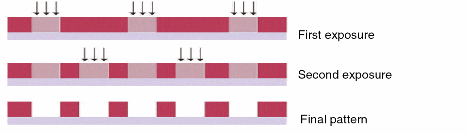

1
Virtuoso Multi-Patterning Technology
Virtuoso® Multi-Patterning Technology (Virtuoso MPT) helps you to visualize how an advanced node layout can be decomposed to mask colors.
Virtuoso® Multi-Patterning Technology (MPT) is used for multi-patterning lithography, such as Litho-Etch-Litho-Etch (LELE) and Self-Aligned Double Patterning (SADP), and uses different colors to represent up to four masks for each drawn layer. For LELE, the colors directly map to the masks. For SADP, this method is effective in determining whether a design can be successfully decomposed during the mask-making step.
For a number of years, IC manufacturing has been pushing the limits of optical lithography to make silicon with features smaller than the conventional ones by employing various resolution enhancement techniques (RET). As the manufacturing equipment and lithography process struggle to keep up with diminishing feature dimensions, their resolution capabilities have fallen further and further behind the target minimum feature size per each advanced node. As a result, optical lithography has finally become unable to print shapes on silicon with a single mask in a single pass starting at 20nm. Available RET/optical proximity correction (OPC) techniques are not able to yield expected feature sizes in close proximity reliably.
The solution to this problem is to use a technique that has existed for years in the photographic industry known as multi-patterning in which two or more mask processes are used to manufacture each design layer. For each design layer, the layout geometry must be decomposed onto separate masks (or colors), typically based on proximity to the nearest shape. To represent a particular mask at the design level, a "color" is associated with each layout shape to indicate the mask used to print the shape. Color decomposition is the process of determining the mask used to print each of the shapes on the same drawn layer while ensuring that none of the shapes assigned to the same mask are too close together to be printed correctly. After a successful decomposition, all geometries with the same color must be at least same mask spacing apart, where the same mask spacing value is defined by the foundry rules. Shapes with different colors can be closer together than same mask spacing because they are printed by different masks, and therefore, do not interact optically like the shapes on the same mask.
For advanced nodes, two or more lithography masks are needed and Multi-Patterning Technology (MPT) is used. There are two popular techniques for applying multiple patterning:
-
Litho-Etch-Litho-Etch (LELE)
Each mask exposure is followed by an etching step. A simple double-pattern diagram is shown here.
 - Self-Aligned Double Patterning (SADP)
The first mask uses side walls (edges) of a feature to define the desired patterns, followed by a second "trim" mask to block out unwanted patterns.
Related Topics
Multi-Patterning Support in Virtuoso
Prerequisites for Virtuoso Multi-Patterning Technology
Return to top